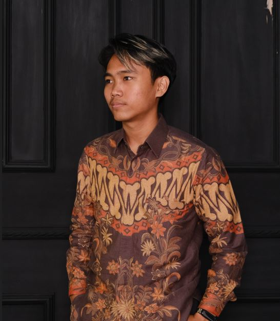
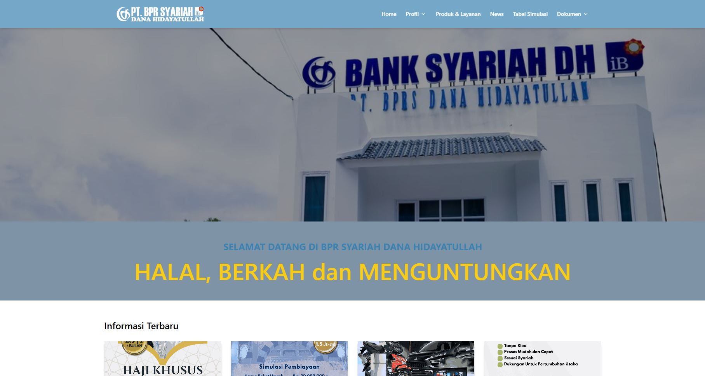

Information Systems graduate with experience as a System Analyst and IT Specialist. Passionate about building reliable web applications and improving system efficiency. Currently focused on growing as a Full-Stack Web Developer.
Discover my future projects, where creativity meets innovation

Developed the official corporate website of BPRS Dana Hidayatullah with responsive UI, REST API integration, and content management features to support company transparency and customer engagement.
Maintenance